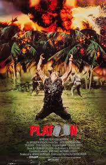
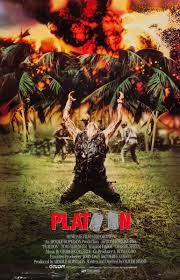

Mis Hobbies
Caminar

Caminar es mucho más que un simple ejercicio para mí. Es una forma de conectar con la naturaleza, despejar la mente y reflexionar sobre la vida. Cada paso es una oportunidad para descubrir nuevos paisajes, disfrutar del aire fresco y sentirme en paz conmigo mismo. Suelo caminar más de 5 kilómetros al día, y cada uno de ellos me llena de energía y vitalidad.
En 2017 tuve la oportunidad de realizar el Camino de Santiago, una experiencia transformadora que me permitió conectar con personas de todo el mundo y descubrir la belleza de la España rural. ¡Fue un viaje inolvidable!
Leer


La lectura es mi refugio personal, un espacio donde puedo escapar de la rutina y explorar mundos infinitos. Disfruto de novelas que me transportan a otras épocas y lugares, libros de historia que me permiten comprender el pasado y textos de espiritualidad católica que alimentan mi alma.
Música
La música y el cine son otras de mis grandes pasiones. Me encanta descubrir nuevos artistas y bandas sonoras que me emocionan, así como disfrutar de buenas películas que me hacen reflexionar sobre la vida.

Películas
 

Me gusta ver buenas películas, veo de todo que sea bueno, en especial me gustan las películas de suspenso.